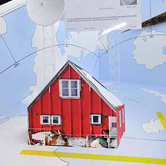
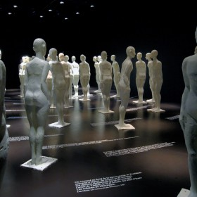

Filter Projects
- All
- Curious
- Exhibition
- Performance
-
Ray-Ban 13th Hour Party
-
Artificial Things
-
Imagine Japan – 2014
-
Enquête Magnétique et Il va vous arriver quelque chose
-

Off Screen – 2012
-
 Wild Life Parc La Garenne
Wild Life Parc La Garenne -

Figures de l’artifice – 2006
-
Pinocchio
-
Impact and Dr Incubis
-
Public International Indigenes – 2005
-
Helvetia Park – 2009
-
After Miss Julie
-
Kaspar Hauser
-
Return from Angola – 2007
-
Albert Herring
-
The Youth Brand – 2008
-
Bow Down
-
Noises – 2010
-
Reverence
-
Euridice
-
Entity